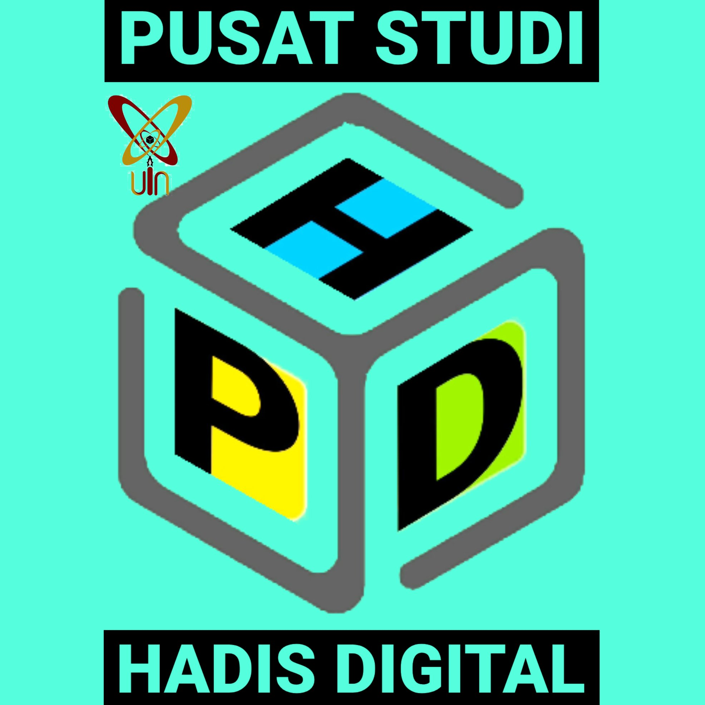
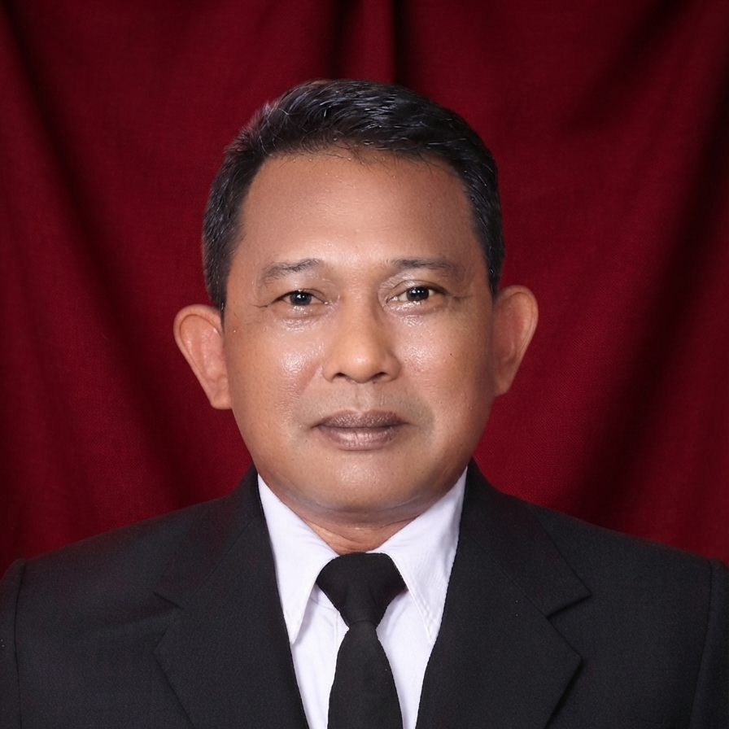
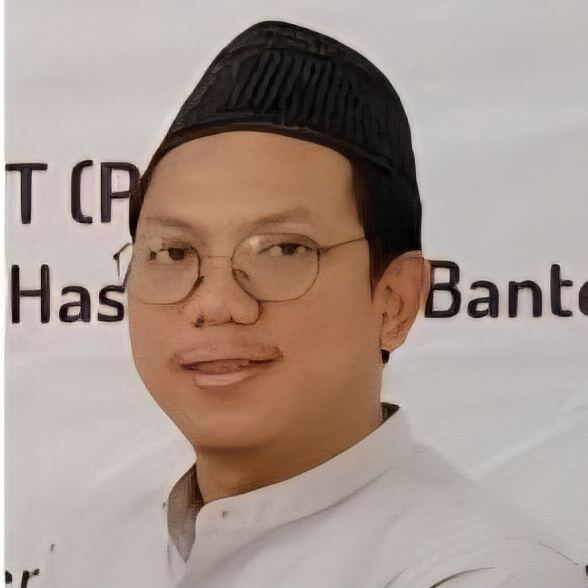
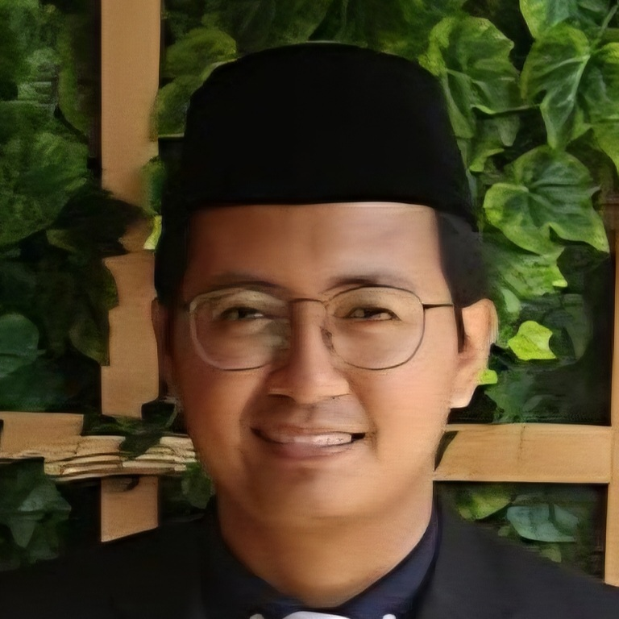
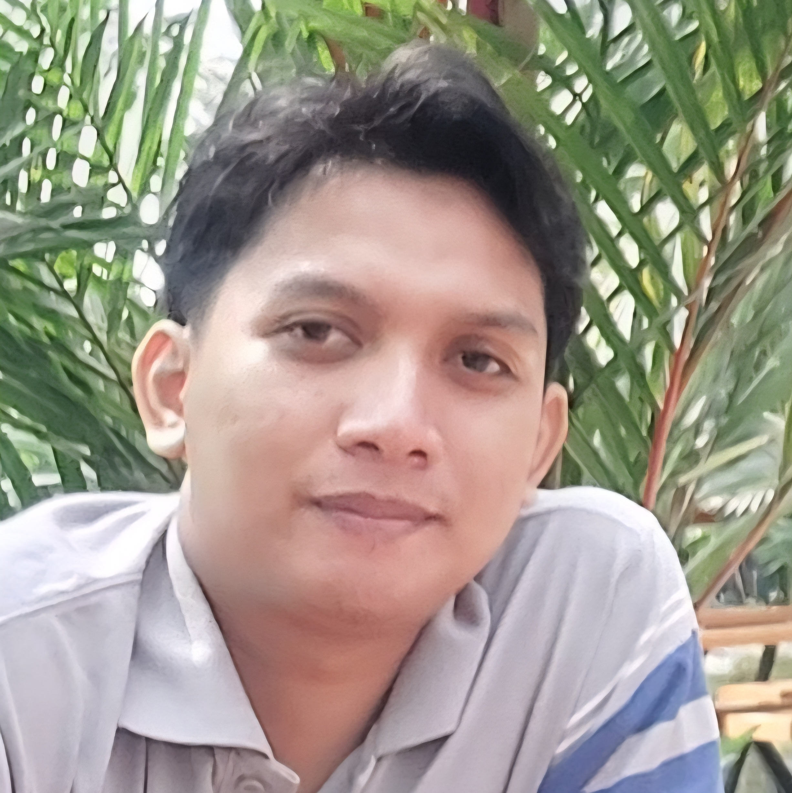

Pusat Studi Hadis Digital
Pusat Studi Hadis Digital (PSHD) merupakan lembaga otonom FUSPI UIN Banten yang bergerak dalam bidang riset, pelatihan, dan pengembangan ilmu hadis berbasis ekosistem teknologi digital untuk menjawab tantangan zaman kontemporer. PSHD memiliki fleksibilitas kelembagaan dalam menjalankan program dan kemitraan.
Struktur Organisasi PSHD
Pengarah
Dekanat FUSPI
Memberikan arahan kebijakan dan pengawasan umum
Direktur

Muhammad Alif
Memimpin arah strategis dan mengoordinasikan program kerja pusat studi
Sekretaris

Salim Rosyadi
Mengelola administrasi kesekretariatan dan tata kelola dokumen kelembagaan
Divisi Pelatihan

Fahmi Andaluzi
Menyusun kurikulum, modul, dan materi bimbingan teknis literasi hadis

Nagib Romadhony
Mengembangkan materi instruksional dan memfasilitasi pelatihan digital
Divisi Pengembangan

Mus'idul Millah
Mengelola sistem portal digital, database, dan infrastruktur teknologi penunjang
Divisi Kemitraan

Repa Hudan Lisalam
Membangun jejaring kerja sama eksternal dan memperluas relasi kelembagaan

Mohamad Mashudi
Mengelola publikasi kegiatan, dokumentasi program, dan komunikasi publik